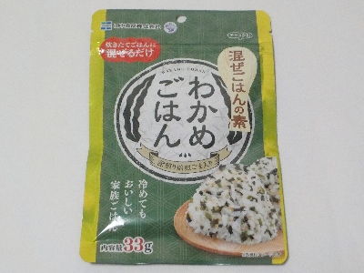

田中食品の混ぜごはんの素わかめごはん。
2024/05/15

深煎り焙煎ごまが沢山入っています。原材料名ではワカメよりもいりごまが先に書かれていました。
ゴマが多いのでゴマの香りやゴマ味が強いです。ゴマが好きな人にピッタリな商品です。
広島県広島市西区東観音町3-22
2024/05/15

深煎り焙煎ごまが沢山入っています。原材料名ではワカメよりもいりごまが先に書かれていました。
ゴマが多いのでゴマの香りやゴマ味が強いです。ゴマが好きな人にピッタリな商品です。